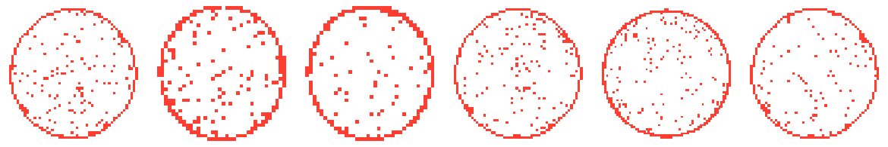

경험기술서 형식(상황·과제·수행·성과)으로 정리한 주요 프로젝트 3건입니다. 학력·수상 등을 포함한 전체 타임라인은 홈에서 볼 수 있습니다.

반도체 양산기술 직무를 준비하며, 실제 공정성 데이터를 다루는 감각을 구체적으로 보여줄 프로젝트가 필요했습니다.
공개된 대용량 웨이퍼맵 데이터셋(WM-811K, 811,457장)을 직접 로드·정제·분석해 결함 패턴을 분류하고 시각화하는 것.
이별·재회, 결혼 등 라이프스테이지별 사주 데이터 분석 서비스를 신규로 총괄하게 됐습니다.
광고 효율을 유지하면서 매출을 성장시키고, 성장이 꺾인 이후에는 사업 정리까지 책임지는 것.
한양대 혁신창업스쿨에서 시작해 AI 기반 가상 피팅 서비스를 공동창업했습니다.
정부지원사업 확보, 팀 빌딩, 제품 개발 및 글로벌 시장 검증까지 총괄하는 것.